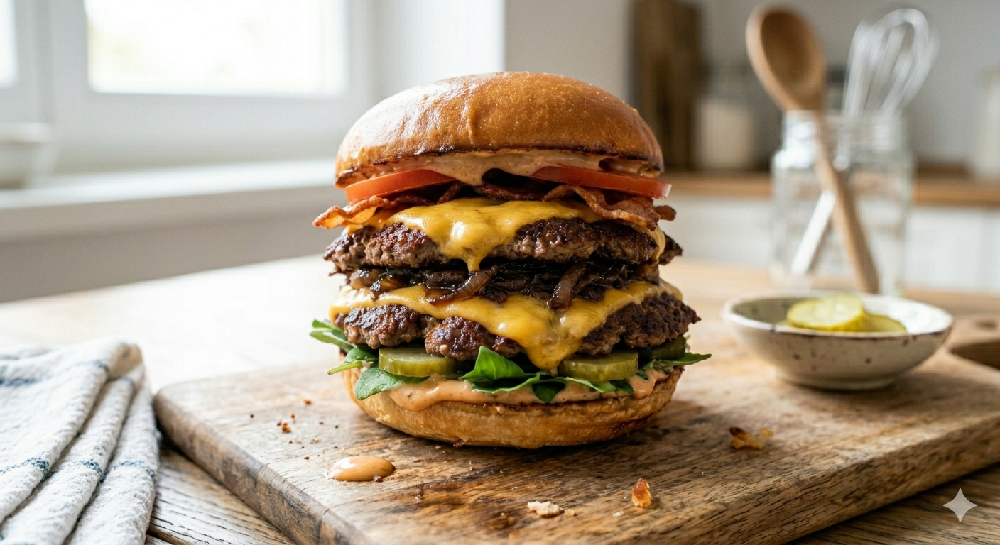
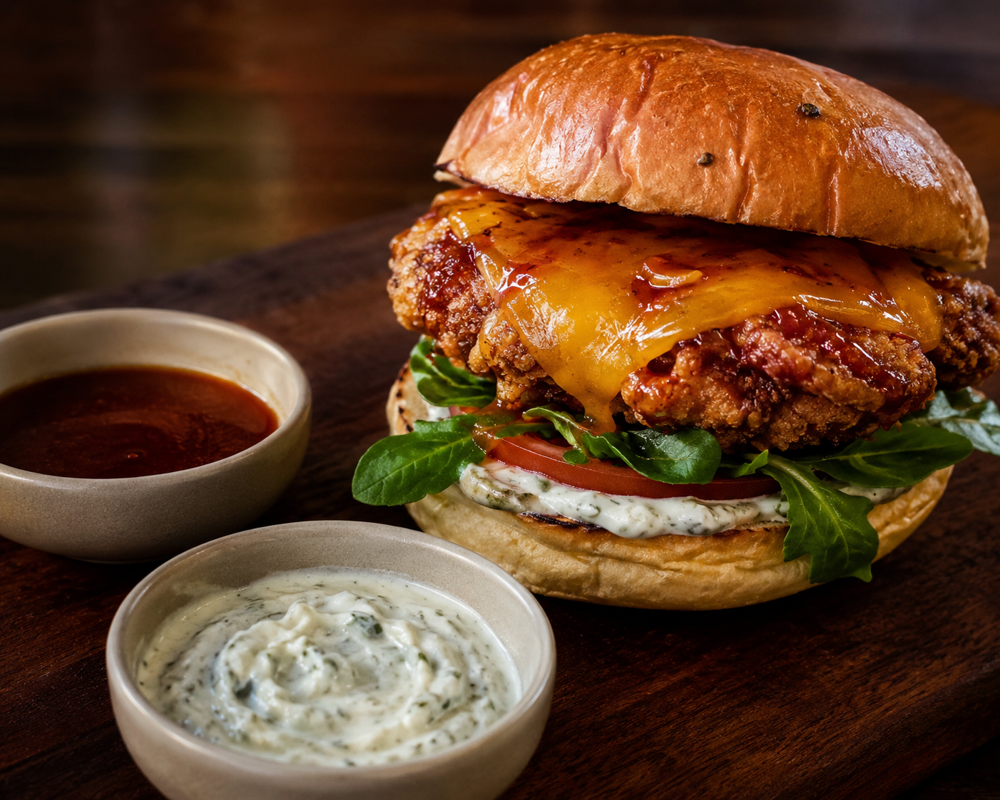
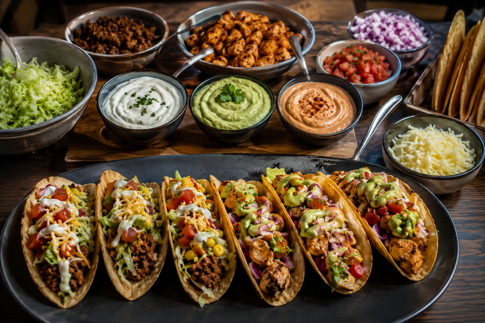
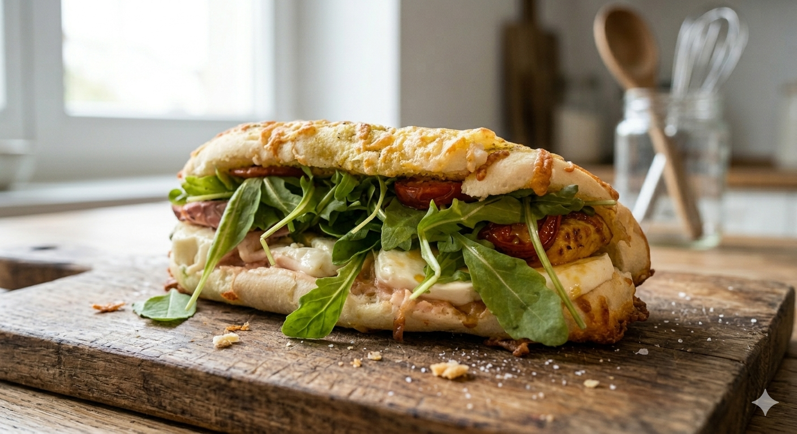
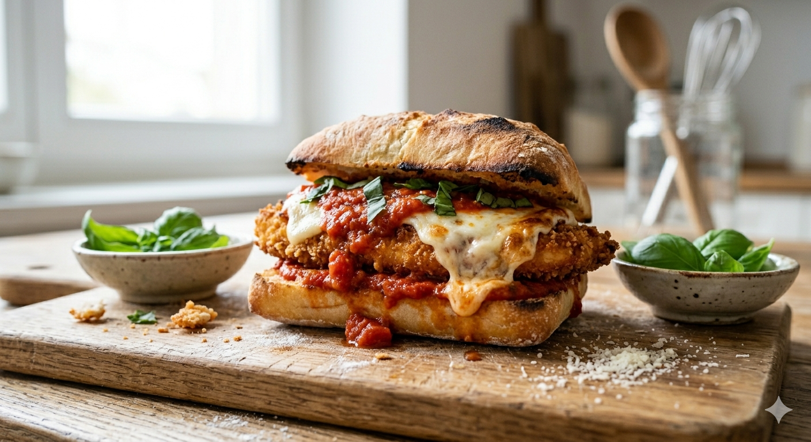
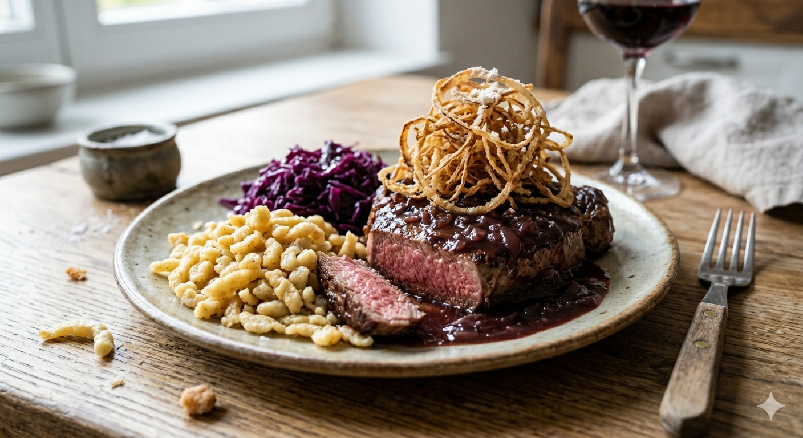
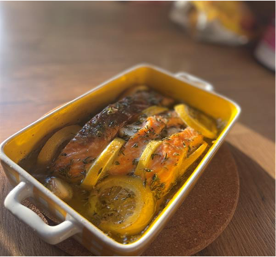
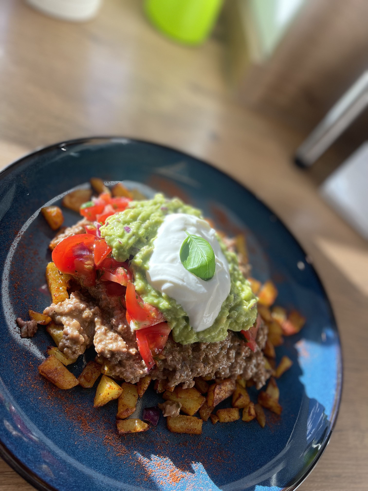
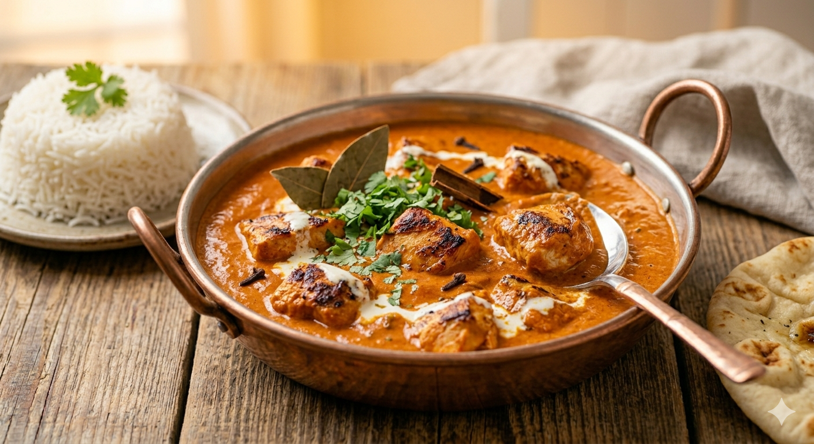

alle rezepte entdecken
Was kochst du heute?
10 Gerichte

🍞SOSSE
🥬SALAT
🍅TOMATE
🥩PATTY + 🧀
🧅ZWIEBELN
🥓BACON
🥩PATTY + 🧀
🥒GURKEN
🍞BUN
★★★★★ 10/10
TheBEST · Smasher
Smash Burger
double smash · cheddar · karamellisierte Zwiebeln
600 g Rinderhack, doppelter Cheddar, karamellisierte Zwiebeln, knuspriger Bacon und die beste Burger-Soße die du je gegessen hast.
Zeit
30
Minuten
Schwierigkeit
4/10
Einfach
Portionen
4
Burger
Rezept öffnen →

🍞BUN
🥣JOGHURT SAUCE
🥬RUCOLA
🍅TOMATE
🍯HONEY GLAZE
🧀GOUDA + CHEDDAR
🍗CRISPY CHICKEN
🍞BUN
★★★★★ 9/10
Spicy · Honey
Crispy Honey Chicken Burger
frittiert · honey-glaze · joghurt-sour-cream
Buttermilch-mariniertes Hähnchen, doppelt paniert und frittiert — mit süßer Honey-Glaze, doppeltem Käse und frischer Joghurt-Sour-Cream-Sauce.
Zeit
60+
Marinierzeit
Schwierigkeit
6/10
Mittel
Portionen
2
Burger
Rezept öffnen →

🌮✨
★★★★★ 9,5/10
Taco-Bar · Dips
Taco-Buffet für 2 Personen
hack + chicken · 3 dips · pico de gallo
Knusprige Taco-Schiffchen, würziges Hackfleisch, frisches Zitronen-Chicken, Pico de Gallo, Avocado-Cream, Sour Cream und Chipotle-Dip.
Zeit
45
Minuten
Schwierigkeit
6/10
Mittel
Portionen
2
Personen
Rezept öffnen →

🫓
★★★★ 7,5/10
Refreshing · Bread
Pesto-Brot mit Hähnchen
hausgemachtes brot · pesto · mariniertes hähnchen
Selbstgebackenes Pesto-Parmesan-Brot mit mariniertem Hähnchen, Mozzarella, Tomaten und Rucola — aufwändig, aber jeden Bissen wert.
Zeit
2,5h
Gesamt
Schwierigkeit
3/10
Leicht
Portionen
6
Stück
Rezept öffnen →

🥪
★★★ 6/10
Sandwich · Italian
Chickenparm-Sandwich
paniertes hähnchen · tomatensauce · mozzarella
Knusprig paniertes Hähnchen auf geröstetem Ciabatta mit hausgemachter Tomatensauce, Mozzarella, Parmesan und frischem Basilikum.
Zeit
60
Minuten
Schwierigkeit
4/10
Einfach
Portionen
2
Sandwiches
Rezept öffnen →

🥩
★★★★★ 9,5/10
Austria · Time
Zwiebelrostbraten mit Rotwein-Sauce
röstzwiebeln · rotwein · spätzle · rotkohl
Saftiges Rindersteak mit tiefer Rotwein-Zwiebelsauce, knusprigen Röstzwiebeln, Spätzle und Rotkohl — das perfekte Sonntagsgericht.
Zeit
70
Minuten
Schwierigkeit
8/10
Anspruchsvoll
Portionen
3
Personen
Rezept öffnen →

🐟🍋
★★★★★ 9/10
Lovly · Zitrone
Zitronen-Lachs mit Petersilienkartoffeln
lachs im ofen · honig-olivenöl-marinade
Lachsfilets in Honig-Olivenöl-Marinade mit Thymian und Zitrone im Ofen gegart — dazu klassische Petersilienkartoffeln.
Zeit
40
Minuten
Schwierigkeit
2/10
Sehr leicht
Portionen
4
Personen
Rezept öffnen →

🥗
★★★★ 7/10
Low fat · 650 kcal
650 Kalorien All-in-All
rinderhack · avocado · kartoffeln · gesund
Ofenkartoffeln, gewürztes Rinderhack mit Käse, frischer Avocado-Dip und Tomatensalat — alles für ca. 650 Kalorien.
Zeit
30
Minuten
Schwierigkeit
4/10
Einfach
Portionen
1
Person
Rezept öffnen →

🫙
★★★★★ 8,5/10
Griechisch · Auflauf
Moussaka nach griechischer Art
auberginen · hackfleisch · béchamel
Geschichtete Auberginen, würzige Hackfleischsauce und cremige Béchamel — überbacken bis goldbraun. Eins der leckersten Gerichte überhaupt.
Zeit
120
Minuten
Schwierigkeit
6/10
Mittel
Portionen
4
Personen
Rezept öffnen →

🍗🫙
★★★★★ 9,5/10
Indisch · Curry
Butter Chicken mit Hähnchenbrustfilet
indisches curry — cremig · würzig · aromatisch
Das weltberühmte indische Curry — über Nacht mariniertes Hähnchen, cremige Tomatensauce mit Garam Masala und Kurkuma. Intensiv und unwiderstehlich.
Zeit
90
Minuten
Schwierigkeit
4/10
Einfach
Portionen
4
Personen
Rezept öffnen →